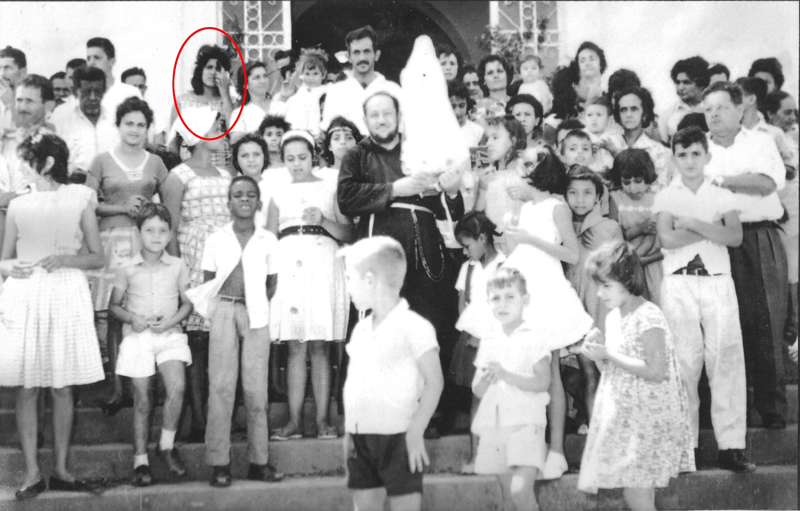
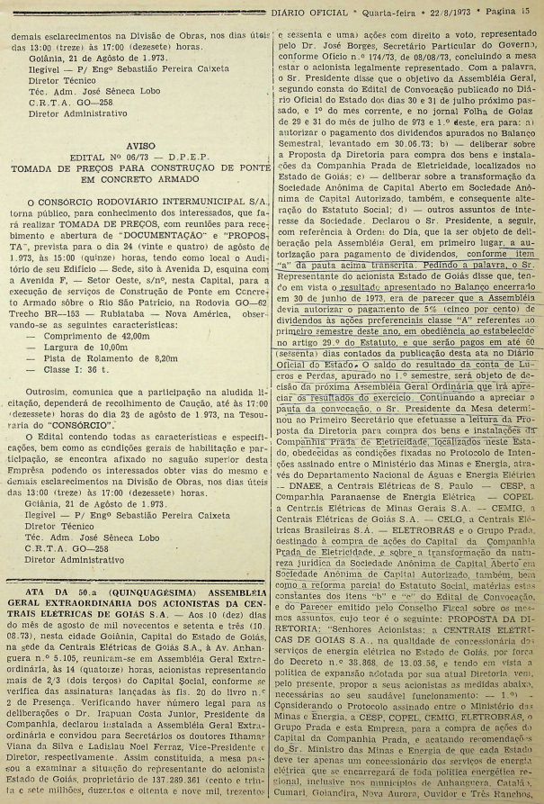
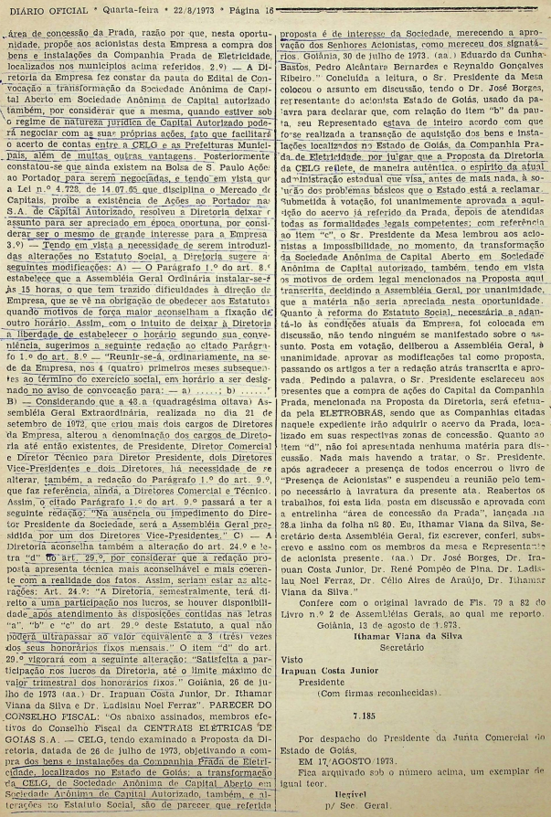
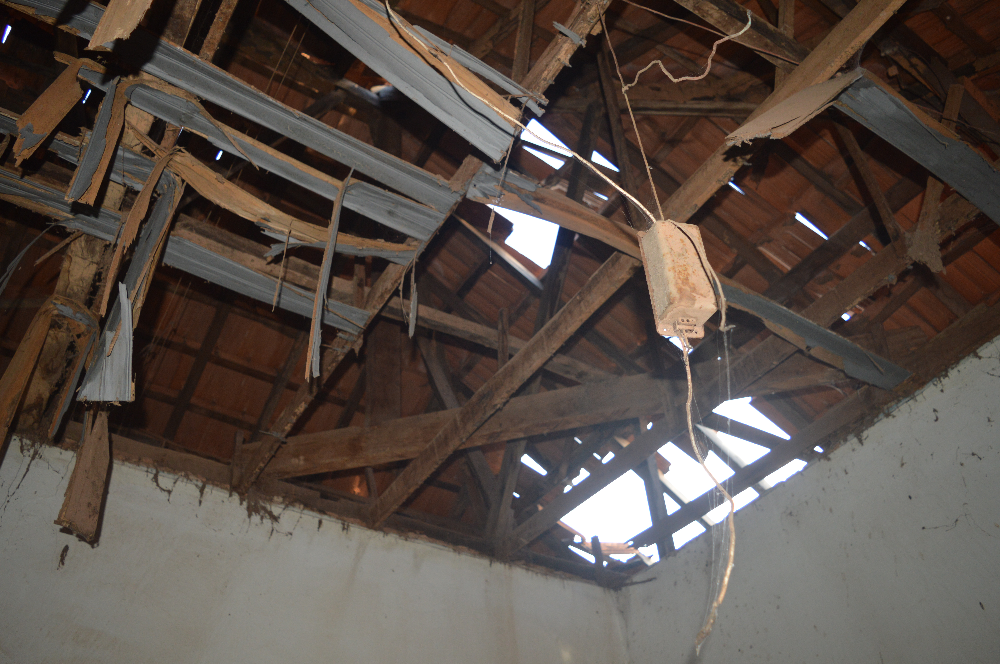
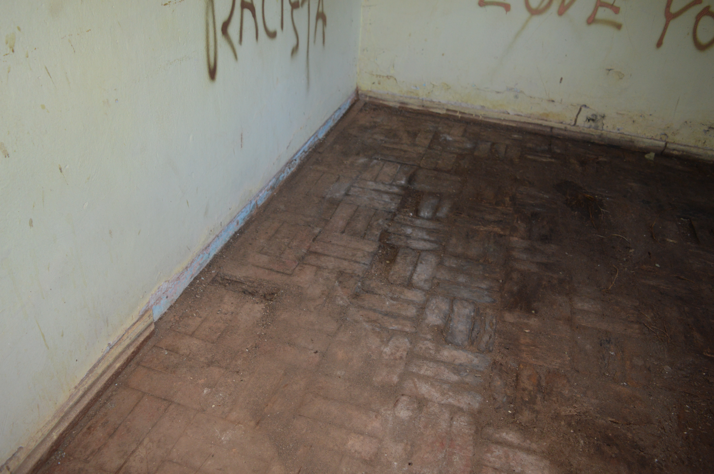
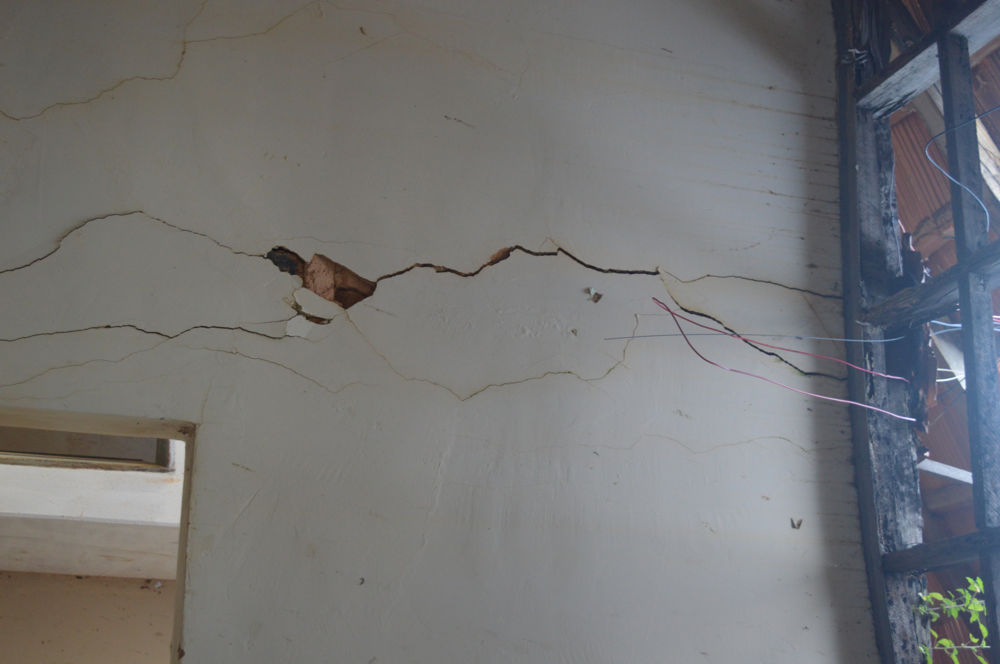
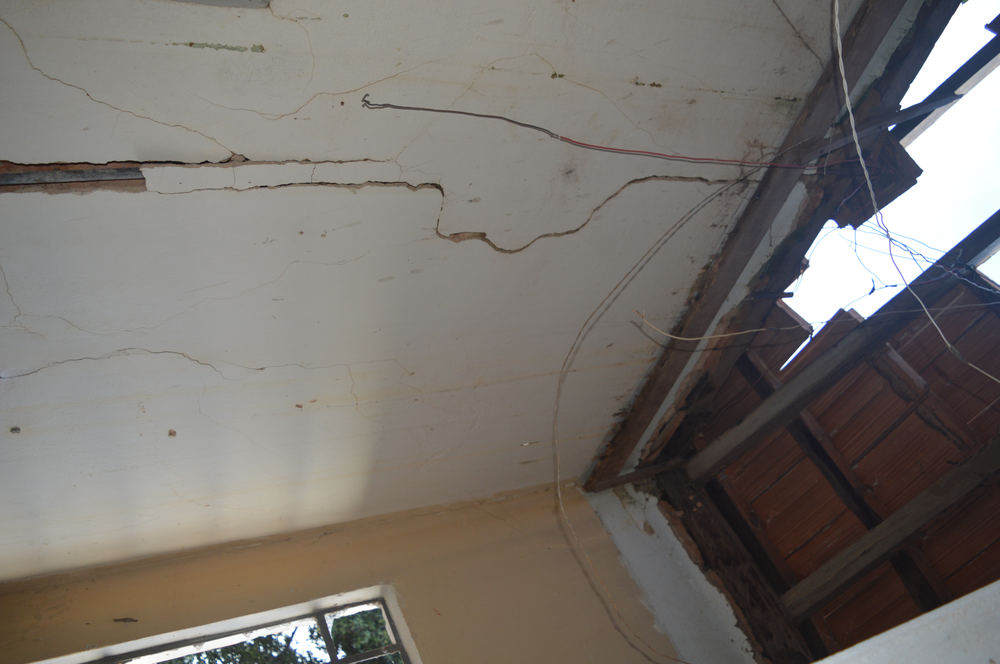
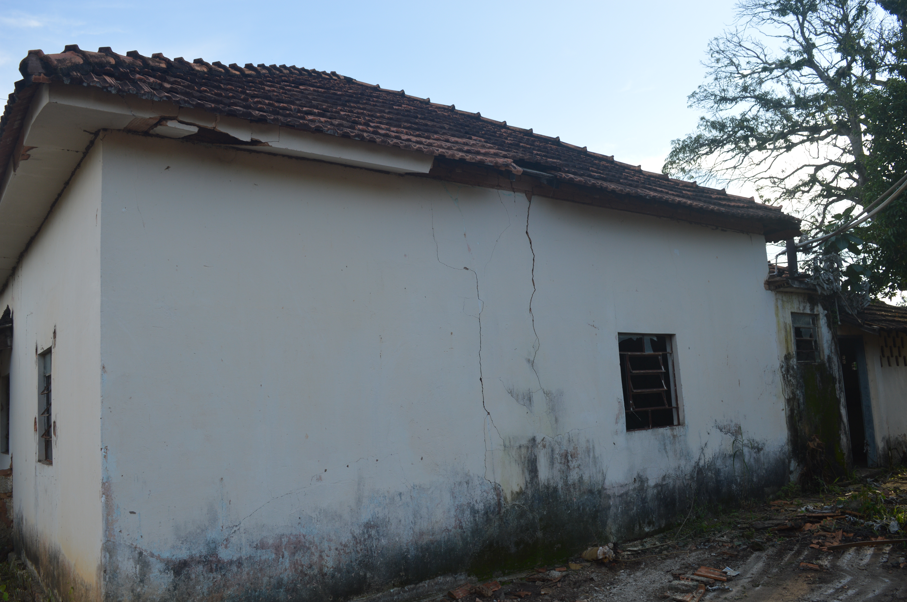
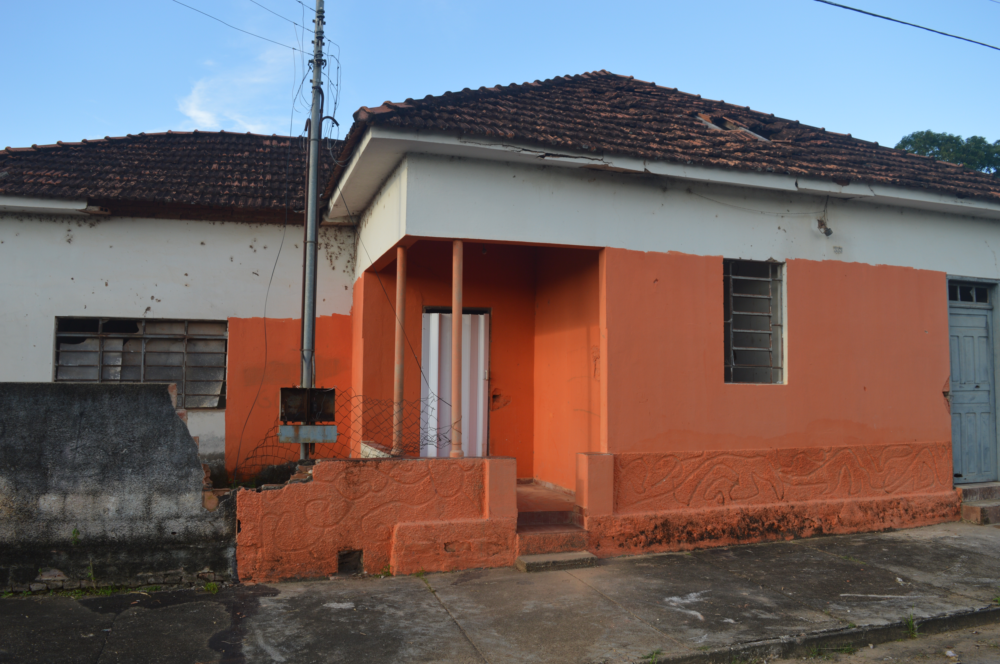

Histórico da casa da CELG em Anhanguera-GO.
1.Introdução
Situado na Rua Abílio Gonçalves Rios, nº333, no centro Anhanguera-GO, o imóvel conhecido como “casa da CELG” se encontra inutilizado e em estado precário, há tempos sem manutenção. Apenas o quintal da propriedade passa por cuidados (na forma de limpeza de entulhos e vegetação) por parte da prefeitura de Anhanguera, quando a mesma se interessa pela utilização do terreno. Agora, a Prefeitura Municipal de Anhanguera em negociação com a CELGPAR, adquiriu a residência e realizará nela uma refoma para sediar a “Casa do Artesão”, espaço que será destinado, segundo o prefeito municipal, a expor as diversas formas de produção artesanal do município e outras ações de cunho cultural.
Diante a situação descrita, faz-se necessário contar essa história para registrar a importância histórica do local e para garantir que, apesar de não contar com proteção via tombamento, a administração pública restaure o local, preservando sua estrutura original e devolvendo-o à comunidade anhanguerina como local de socialização e promoção cultural.
2.Contexto histórico
2.1.A Companhia Prada e o início da história da “Casa da CELG”
A famosa “casa da CELG” é umas das inúmeras construções que compõem o acervo arquitetônico do município de Anhanguera-GO. Tal acervo teve sua construção iniciada logo nos primeiros anos da década de 1930, com a construção da Capela Nossa Senhora Aparecida, em 1932. Nessa época ainda éramos “Anhanguera Velha”. Nossa tão querida Anhanguera, a atual, teria sua construção iniciada por volta de 1935.
Alguns anos após o início da formação do atual centro da cidade de Anhanguera, já na década de 1940, foi construída a residência em questão, que passou a dividir a paisagem com a Capela São José, conforme a Figura 1. Não se sabe a data exata da construção do imóvel mas é sensato teorizar que tenha sido no ano de 1948, ano este correspondente ao inicio das atividades da Companhia Prada em Goiás.

Em primeiro plano, vemos um cidadão não identificado próximo à capela. Ao fundo, destaca-se a casa da CELG.
O motivo da construção do imóvel ainda é incerto. Sua primeira utilização conhecida foi como sede da “Companhia Prada de Eletricidade”, fundada em Araguari-MG. De acordo com a Fundação Araguarina de Educação e Cultura (FAEC),
“A inauguração da Luz Elétrica em Araguary se deu no dia 06 de novembro de 1910, por meio da Empresa Força e Luz de Araguri. Três anos após, Agostinho Prada adquiriu todo o acervo do serviço de energia elétrica e em 1916, fundou a Companhia Prada. A empresa foi responsável pelo serviço até ser encampada pela estatal CEMIG (Centrais Elétricas de Minas Gerais), em 24 de outubro de 1973.”[1]
Conhecida popularmente apenas como ‘Prada’, tal companhia pode ter sido a responsável pela construção do imóvel, visto que, em seu blog “Ponto de Vista”, em um dia de sábado, 14 de junho de 2008, Antônio Fernando Peron Erbetta(1942-2009) escreveu que em meados de 1948, “a extinta Cia. Prada de Eletricidade adquiriu a chamada Zona Goiás, que era composta por Anhanguera, Cumari, Goiandira, Catalão, Ouvidor e Três Ranchos.”[2] Tal informação, junto à Figura 1, corrobora a existência do imóvel já na década de 1940 bem como as histórias contadas pelos anhanguerinos e a importância do local para a formação da cidade.
Durante o período de funcionamento da Prada em Anhanguera, o local serviu como escritório da empresa no município e também como moradia e depósito para os intrumentos utilizados para montagem e manutenção de redes elétricas. E sobre a equipe da Padra, destaca-se o senhor Heleno Rosa Garcia, servidor que até hoje se mantém presente na memória da população. Junto com sua esposa Heráclita, conhecida como dona Neném, (ver Figura 2), viveram na cidade por muitos anos como amigos queridos por muitos na cidade.

A Companhia Prada de Eletricidade funcionou em Anhanguera até 1973, ano em que a empresa foi encampada pelo Ministério de Minas e Energia. Pela nova resolução do ministério, só poderia haver uma única concessionária de energia em cada estado. Com isso, os direitos de geração e distribuição de energia elétrica da Prada foram transferidos para as estatais CESP, COPEL, CEMIG e ELETROBRAS. Nas cidades da Zona Goiás, citada anteriormente, os direitos foram repassados para a estatal Centrais Elétricas de Goiás S.A(CELG). No dia 10 de agosto de 1973, durante a quinquagésima assembleia extraordinária dos acionistas da CELG, foi autorizada a compra dos bens e imóveis da Companhia Prada de Eletricidade em Anhanguera e demais cidades da Zona Goiás da Prada. A decisão foi homologada em 22 de agosto de 1973 com a publicação da ata da assembleia no Diário Oficial do Estado de Goiás, conforme Figura 3 e Figura 4.


2.2.Resumo sobre o período de funcionamento da CELG em Anhanguera
De acordo com a entrevista realizada com Eurico José de Novais, servidor aposentado da CELG, o senhor Heleno continuou trabalhando na cidade durante o período de transição das companhias elétricas (finalizando o ano de 1973 e parte de 1974). Em 1975 foi enviado de Goiânia para Anhanguera o senhor José Eustáquio, que permaneceu responsável pelos serviços da empresa e por zelar da residência até o ano de 1980. Com a saída de José Eustáquio, ficou responsável pelos serviços o servidor Eurico José de Novais. O mesmo havia iniciado carreira na companhia em 1977, via concurso público, prestando serviços em Catalão e apenas em 1980 assumiu o cargo em Anhanguera. Em 1984, o sr. Eurico é transferido para Catalão e, por isso, é substituído pelo sr. José Humberto, esposo da professora Nádia Koffs, também servidor da CELG. Muito querido pela comunidade e conhecido popularmente como “Zebra”, o sr. José Humberto desempenhou a função até 1991, quando o sr. Eurico é transferido de volta para Anhanguera, desempenhando a função de eletricista da estatal até o dia 31 de dezembro de 1996, assumindo como prefeito de Anhanguera na manhã do dia seguinte. De 01 de janeiro de 1997 a 31 de dezembro de 2000, esteve no cargo sr. Carlos Aparecido Pereira, servidor da prefeitura de Anhanguera à disposição da empresa (anhanguerino nato, até a data de escrita do presente texto, o sr. Carlos desempenha a função de eletricista da Prefeitura Municipal de Anhanguera). Ao retornar em janeiro de 2001, o servidor Eurico foi transferido novamente para Catalão pois a empresa havia fechado o escritório de Anhanguera em junho de 2000, devido a uma política de fechamento dos pequenos escritórios da empresa. Apesar disso, foi permitido ao senhor Eurico morar na residência até 2002, quando o mesmo foi transferido para o município de Cumari, onde trabalhou até sua saída da empresa em 2009 e aposentadoria de fato em 2011. Assim, foi encerrada a história do imóvel como escritório das companhias elétricas que passaram pelo município de Anhanguera.
Desde o ano de 2002, o Estado de Goiás abandonou o imóvel e não atribuiu a ele nenhum uso ou manutenção. Apenas em 2010, mediante reforma realizada nas dependências do Colégio Estadual Adelino Antônio Gomide (CEAAG) é que o prédio da estatal voltou a ser utilizado, por aproximadamente dez meses, como sede temporária do CEAAG. O local abrigou a direção, secretaria, cozinha e duas salas de aula. Após a conclusão da reforma do colégio, o imóvel retornou ao seu estado de abandono e somente seu quintal foi utilizado pela prefeitura, em algumas ocasiões, para plantio de hortaliças.
2.3.Próximos passos
Após a aquisição da CELG pela ENEL Brasil, concluída em 14 de fevereiro de 2017, a posse da “Casa da CELG” permaneceu com a Companhia CELG de Participações (CELGPAR), companhia esta que subsidiava a CELG. Em 2019, a CELGPAR colocou a leilão a casa onde funcionou o escritório da empresa (juntamente com o quintal do imóvel) e o terreno localizado na esquina das ruas Abílio Gonçalves Rios e Professora Júlia de Brito (local onde se localizava a antiga subestação elétrica de Anhanguera, construída nos tempos da PRADA e utilizada pela CELG em parte de seu tempo de funcionamento no munícipio). Como a empresa estava pedindo um valor alto pelo metro quadrado dos imóveis, os mesmos não foram vendidos no leilão.
Após demonstrar interesse de compra e apresentar/ouvir as primeiras propostas, a Prefeitura Municipal de Anhanguera elaborou o Projeto de Lei nº 003/2025, apresentando a proposta de compra, forma de pagamento e as formas de utilização dos terrenos adquiridos. Para a apreciação do projeto, a Câmara Municipal realizou duas sessões extraordinárias nos dias 10 e 11 de fevereiro de 2025, sendo a maioria dos votos favoráveis à compra dos terrenos em ambas as sessões. Na manhã do dia 20 de fevereiro de 2025, foi assinado o contrato de compra dos terrenos em uma cerimônia realizada em frente à antiga casa a ser adquirida. O imóvel passará por uma reforma e conta com previsão de entrega da obra à população durante os eventos de comemoração do aniversário da cidade, na semana do dia 5 de novembro de 2025.
3.Condições Atuais do Imóvel
Abaixo estão apresentadas algumas fotografias que ilustram o estado atual do imóvel, todas tiradas pelo autor na tarde do dia 7 de fevereiro de 2025.






Uma curiosidade importante de ser contada é que, durante uma reforma realizada na administração do senhor Roberto da Silva Rocha, gerente regional da CELG em Catalão, as telhas originais do imóvel (do tipo 'francesa'), provenientes da antiga Cêramica Anhanguera, foram substituídas por novas telhas, do mesmo tipo, trazidas de Monte Carmelo-MG. Até o momento da escrita do texto, o autor não conseguiu descobrir qual foi o ano de realização da reforma citada.
4.Pessoas que contribuíram com a coleta de informações.
- Maria de Lourdes Melo
- Maria Célia Costa
- Nádia Maria Koffs
- Jamil Divino Alves
- Eurico José de Novais
- Matias Joaquim Alves
- João Figueredo Filho